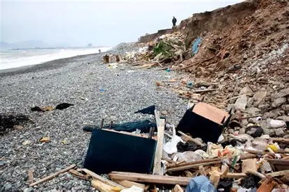

Causas
Las principales causas de la contaminación ambiental incluyen la actividad industrial, la quema de combustibles fósiles, la deforestación y la mala gestión de residuos; sus consecuencias abarcan el cambio climático, enfermedades respiratorias, degradación de ecosistemas y escasez de agua potable